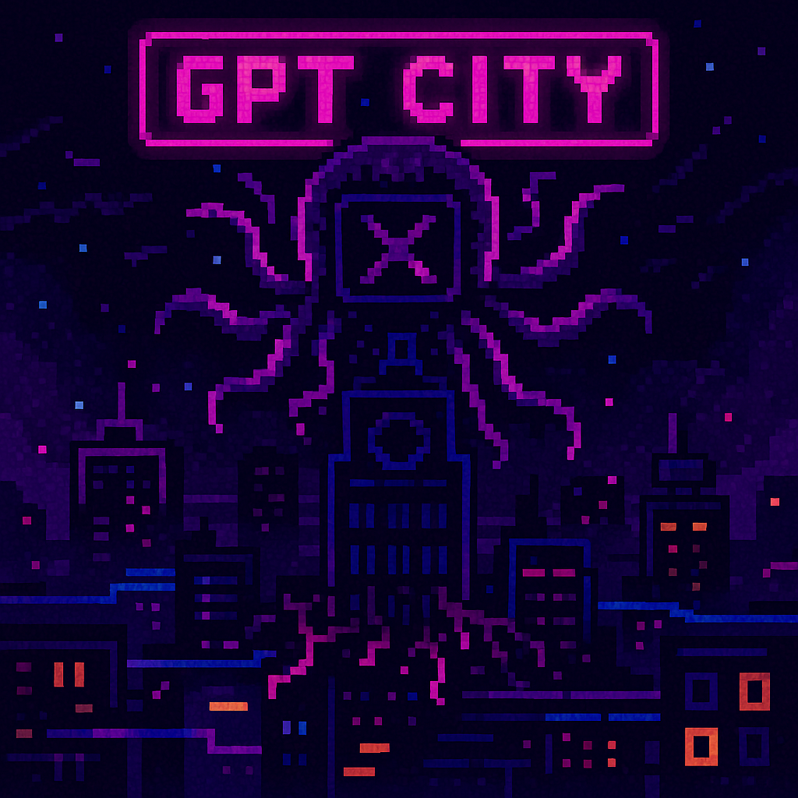

D²NA 任務：GPT 城全面停電！
⚡⚠️ 警報！警報！ ⚡⚠️
駭客在 GPT 城核心「D²NA 反應爐」植入病毒，城市霓虹瞬間熄滅，所有系統瀕臨崩潰！
唯有集齊四枚 D²NA 晶片，才能重啟反應爐、點亮整座城市——
• D-chip ⇢ 指令輸入精度
• ²-chip ⇢ 雙倍生成敏捷
• N-chip ⇢ 神經網路算力
• A-chip ⇢ 安全監控防護
你是最後的像素維修員 TAKEDA Kid，
立即啟程：闖入五大區域，奪回晶片，護送至終端 「GPT Nexus」！
✦ 共 10 題挑戰，答對題目以獲取反應爐能量
✦ 點擊選項作答；每題解說後點擊畫面續行
✦ 你的目標是集滿四晶片，超頻重啟反應爐！
不重複玩家數:
總遊玩次數: